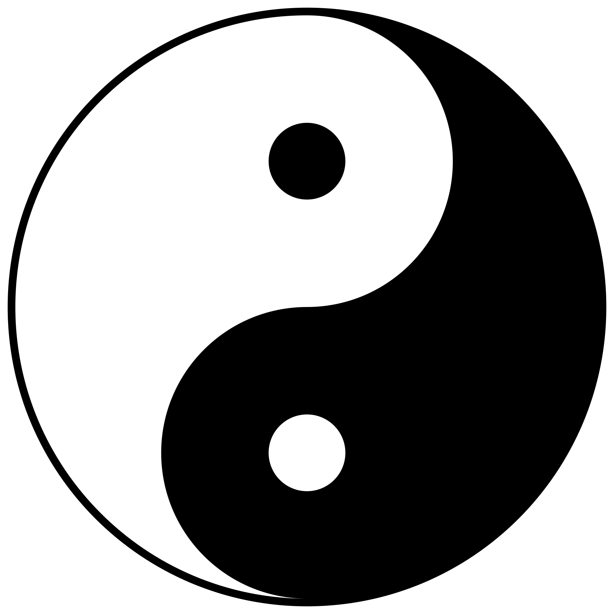

I'm Frederick.
a programmer.
Hello.
I am a freelancer who specializes in web development and graphic design. I love creating websites and graphics that are beautiful and user-friendly. I also have a passion for philosophy and life, and I enjoy reading and discussing them with others. In my spare time, I solve math problems and puzzles for fun.
My Skills.

Design & Development
I don't want to exaggerate my coding background, but I have always had a talent for thinking in patterns and understanding abstract concepts like coding and mathematics. This has helped me learn programming languages quickly and design webpages and graphics with high standards. 😊
Keeping It Weird
My communication is based on honesty and authenticity, and I have a diverse and unique perspective(wierdo 😉).
Get In Touch
Philosophy and Coding: A Fun Combo!
I'm a free-spirited and quirky person who loves philosophy and coding. How about you? Do you want to hang out with me and talk about Buddha, Aurelius, and other philosophers? We can also code while we have fun conversations!